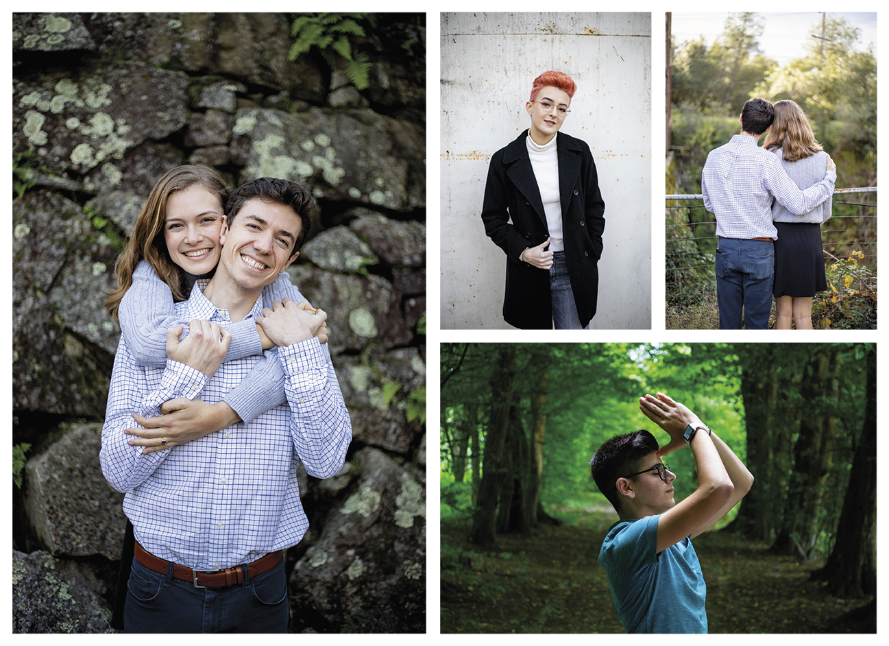

Engagements, Live Events, and More!

"Nicky is the best! He has photographed my graduation photos, individual portraits, and even my engagement session. I would book him for any occasion because of his great eye for portraits, his amazing editing skills, and his friendly and relaxed demeanor.
I love how he edits the photos the perfect amount—bright and full of life without looking artificial.
I will continue to recommend Nicky to all of my friends and family for their photography needs!"
— Rachel Pajer
Check out the gallery to see a broad range of photography!
View GalleryAbout Me
Hello! I'm Nicky, and I take photos of people.
Ever since I was very young I've been facinated with photography. My first camera was a cheap Kodak point-and-shoot my grandma gave to me, and ever since I first clicked the shutter button I became obsessed with the ability to recreate (and create) life and art with a camera.
I learned how to use a DSLR camera in 7th grade, and have been honing my skills ever since. Take a look at my work in my gallery, and if you're interested book a session with me!
About Me!Portraits for Any Occasion

I can shoot for your any occasion! I have experience shooting graduation, life event, and romantic situations.
Book a session with me below, or view my gallery to see some of my favorite shoots!
Book a Session View Gallery